Tiny
striped nudibranch
Dermatobranchus sp.
Family
Arminidae
updated Mar 2020
Where
seen? This
tiny nudibranch is sometimes seen on coral rubble and seaweeds near
reefs on our Southern shores. Relatively regular encounters suggest
they may be quite common but often overlooked because they are so
tiny.
Features: About 1cm long. Body
very long and slender, dark with fine white ridges with an even finer
yellow line down the centre of the ridges. Yellow body margins, dark
rhinophores, a white wedge-shaped flap over its mouth (oral veil)
also with yellow margins. The underside is white. It lacks a feathery
gill on its back.
Sometimes confused with Armina
nudibranchs (Armina sp.) which are much larger.
|
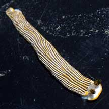
Labrador, Jun 08 |
|
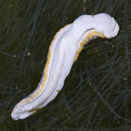
Sentosa, Mar 07 |
| Tiny
striped nudibranchs on Singapore shores |
| Other sightings on Singapore shores |
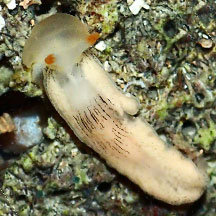
Pulau Sekudu, Aug 24
Photo shared by Chay Hoon on facebook. |
|
|
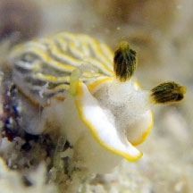
Sentosa, Dec 18
Photo shared by Loh Kok Sheng on facebook. |
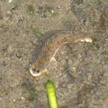
Lazarus Island, Mar 16
Photo shared by Law Ing Sind on facebook. |
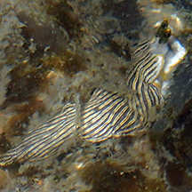
Kusu Island, Jun 15
Photo shared by Toh Chay Hoon on facebook. |
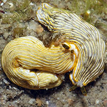
St John's Island, Aug 09
Photo shared by James Koh on flickr. |
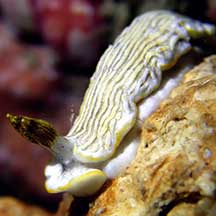
St John's Island, Oct 20
Photo shared by Jianlin Liu on facebook. |
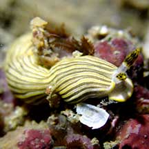
Pulau Tekukor, Nov 20
Photo shared by Jianlin Liu on facebook. |
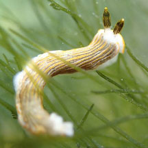
Small Sisters Island, May 18
Photo shared by Dayna Cheah on facebook. |
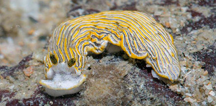
Big Sisters Island, Jun 17
Photo shared by Marcus Ng on facebook. |
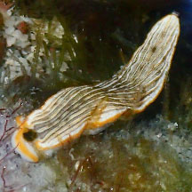
Big Sisters Island, Feb 24
Photo shared by Toh Chay Hoon on facebook. |
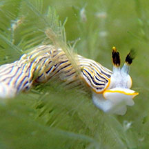
Cyrene, Feb 20
Photo shared by Loh Kok Sheng on facebook. |
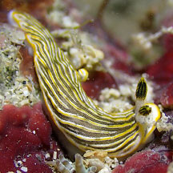
Cyrene, Feb 26
Photo shared by Jianlin Liu on facebook. |
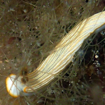
Pulau Semakau East, Jul 15
Photo shared by Toh Chay Hoon on facebook. |
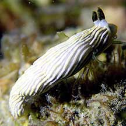
Terumbu Semakau, Apr 21
Photo shared by Jianlin Liu on facebook. |
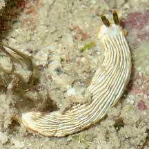
Terumbu Bemban, May 21
Photo shared by Toh Chay Hoon on facebook. |
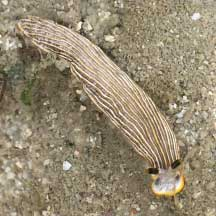
Terumbu Pempang Laut, Jan 22
Photo shared by Kelvin Yong on facebook |
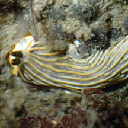
Terumbu Pempang Laut, May 15
Photo shared by Heng Pei Yan on facebook |
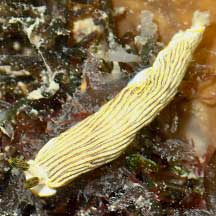
Terumbu Pempang Tengah, May 21
Photo shared by Toh Chay Hoon on facebook |
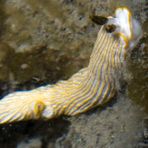
Pulau Berkas, May 10
Photo shared by Marcus Ng on flickr. |
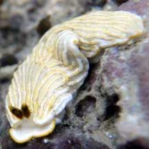
Pulau Biola, Jan 22
Photo shared by Loh Kok Sheng on facebook. |
|
Links
References
- Tan Siong
Kiat and Henrietta P. M. Woo, 2010 Preliminary
Checklist of The Molluscs of Singapore (pdf), Raffles
Museum of Biodiversity Research, National University of Singapore.
- Debelius,
Helmut, 2001. Nudibranchs
and Sea Snails: Indo-Pacific Field Guide IKAN-Unterwasserachiv, Frankfurt. 321 pp.
- Wells, Fred
E. and Clayton W. Bryce. 2000. Slugs
of Western Australia: A guide to the species from the Indian to
West Pacific Oceans.
Western Australian Museum. 184 pp.
- Coleman,
Neville. 2001. 1001
Nudibranchs: Catalogue of Indo-Pacific Sea Slugs. Neville
Coleman's Underwater Geographic Pty Ltd, Australia.144pp.
- Humann, Paul
and Ned Deloach. 2010. Reef
Creature Identification: Tropical Pacific New World Publications.
497pp.
|
|
|